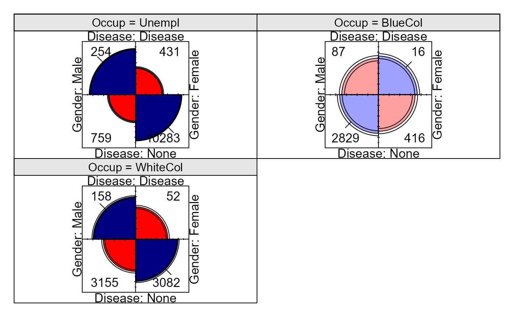

Classification of individuals by gender, occupational category and occurrence of heart disease
Format
A 3-dimensional array resulting from cross-tabulating 3 variables for 21522 observations. The variable names and their levels are:
| No | Name | Levels |
| 1 | Disease | "Disease", "None" |
| 2 | Gender | "Male", "Female" |
| 3 | Occup | "Unempl", "WhiteCol", "BlueCol" |
Examples
data(Heart)
str(Heart)
#> 'table' num [1:2, 1:2, 1:3] 254 759 431 10283 158 ...
#> - attr(*, "dimnames")=List of 3
#> ..$ Disease: chr [1:2] "Disease" "None"
#> ..$ Gender : chr [1:2] "Male" "Female"
#> ..$ Occup : chr [1:3] "Unempl" "WhiteCol" "BlueCol"
# Display the frequencies for occupational categories.
# Each row is a 2 x 2 table
vcd::structable(Disease + Gender ~ Occup, data=Heart)
#> Disease Disease None
#> Gender Male Female Male Female
#> Occup
#> Unempl 254 431 759 10283
#> WhiteCol 158 52 3155 3082
#> BlueCol 87 16 2829 416
# display as fourfold plots
vcd::cotabplot(~ Disease + Gender | Occup, data=Heart, panel = cotab_fourfold)
